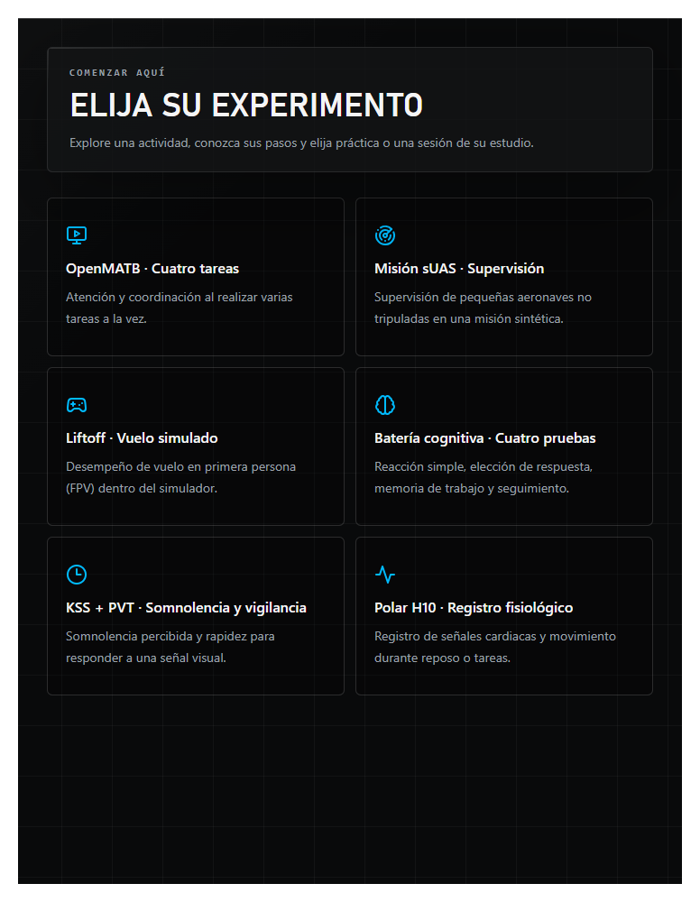
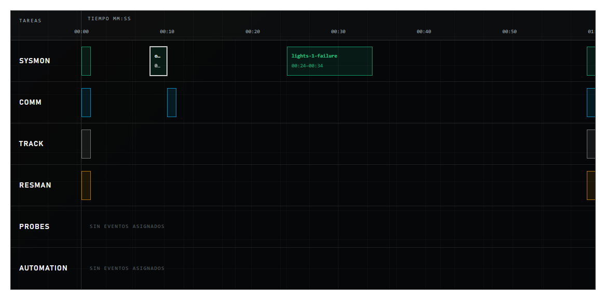
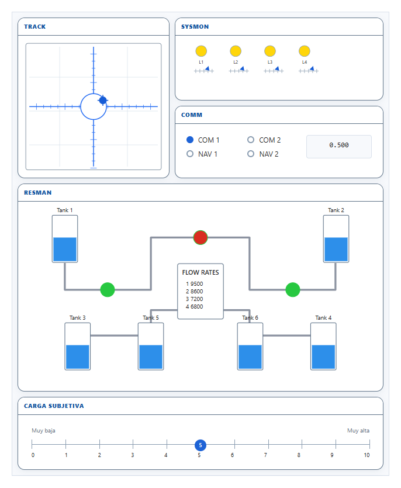
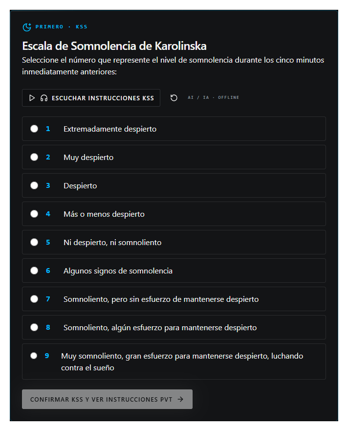
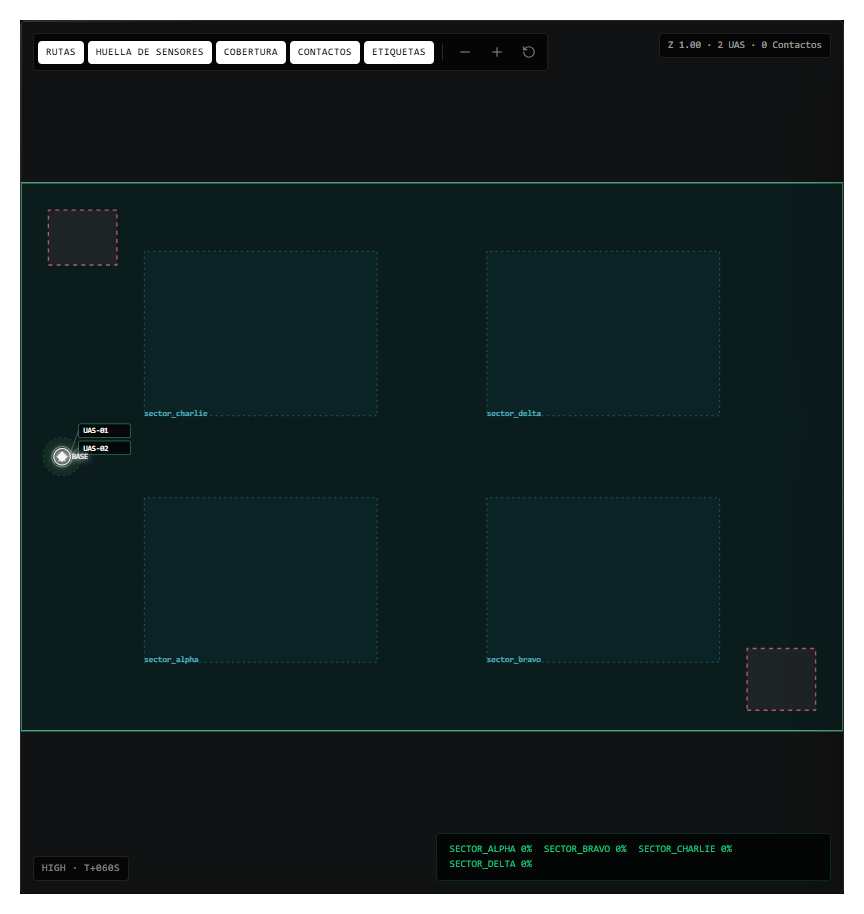
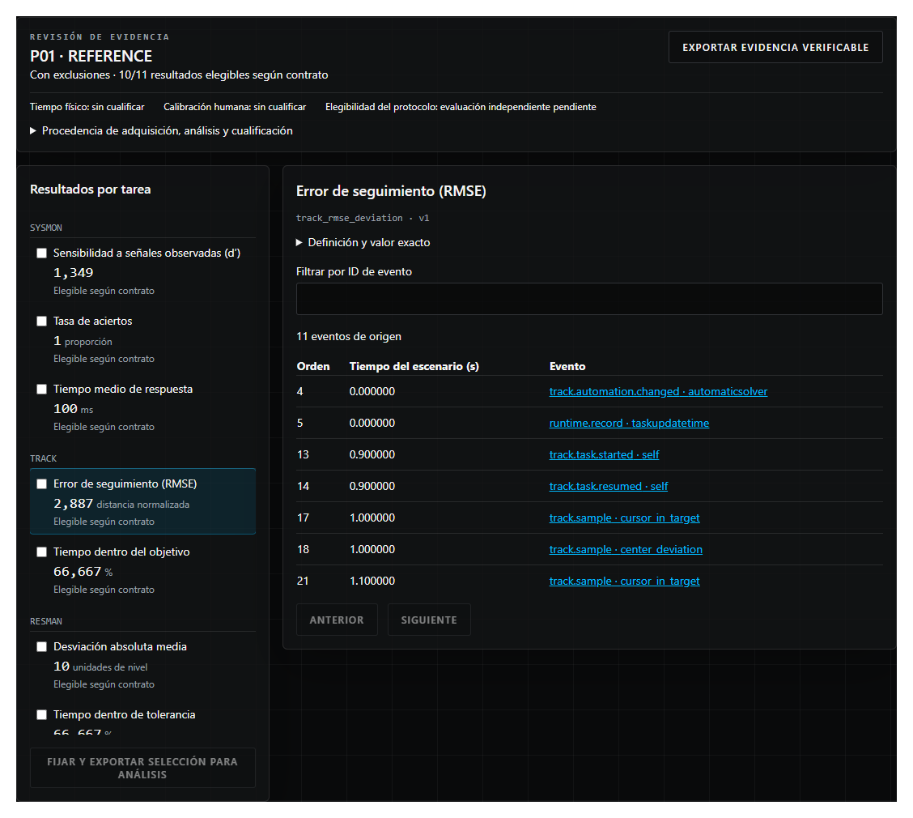
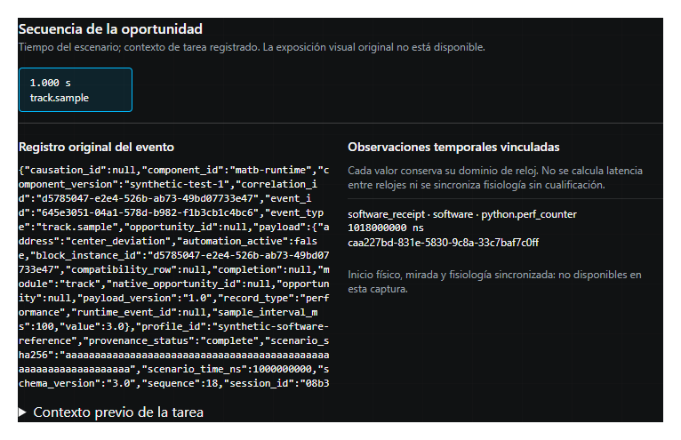

Catálogo de actividades
Se capturó el catálogo conectado, con las seis actividades visibles.

Abrir captura completa originalhttp://127.0.0.1:3118/start
Pública clasificada · Capturas reales de una ejecución local con datos sintéticos.
Las imágenes muestran funciones de la aplicación; no representan resultados humanos ni validación clínica u operacional.
Se capturó el catálogo conectado, con las seis actividades visibles.

Abrir captura completa originalhttp://127.0.0.1:3118/start
Se compiló el escenario de ejemplo. El detalle conserva la visualización del editor, incluidos los rótulos abreviados por la propia interfaz.

Abrir captura completa originalhttp://127.0.0.1:3118/experiments
Panel de apariencia web. No representa una sesión de adquisición en el entorno nativo.

Abrir captura completa originalhttp://127.0.0.1:3118/openmatb/appearance
P01 fue creado exclusivamente en la base sintética. Captura previa a responder KSS; no se obtuvo un PVT humano.

Abrir captura completa originalhttp://127.0.0.1:3118/pvt?purpose=practice&fast=1#kss
Sesión interactive_technical, HIGH. Mapa al final del bloque en estado pausado. La sesión se abortó al terminar las capturas.

Abrir captura completa originalhttp://127.0.0.1:3118/mission?session=sim-20260922T003838-4e537726
Importación del generador synthetic_capture, identidad emavi-demonstration. El fixture declara synthetic_reference_only. Sus campos source_commit bbbb y scenario_sha256 aaaa son constantes del fixture, no identifican el checkout.

Abrir captura completa originalhttp://127.0.0.1:3118/upload
Evento track.sample de la misma captura sintética. Paquete exportado y recomputado localmente; ver revision/verificacion_exportacion.json.

Abrir captura completa originalhttp://127.0.0.1:3118/upload